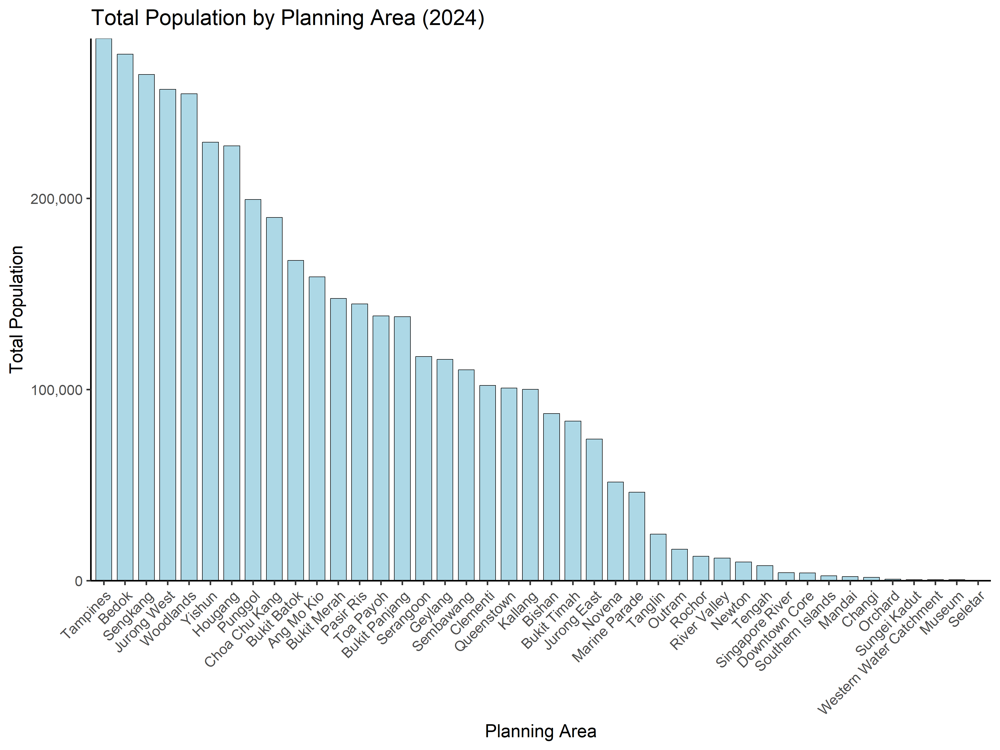
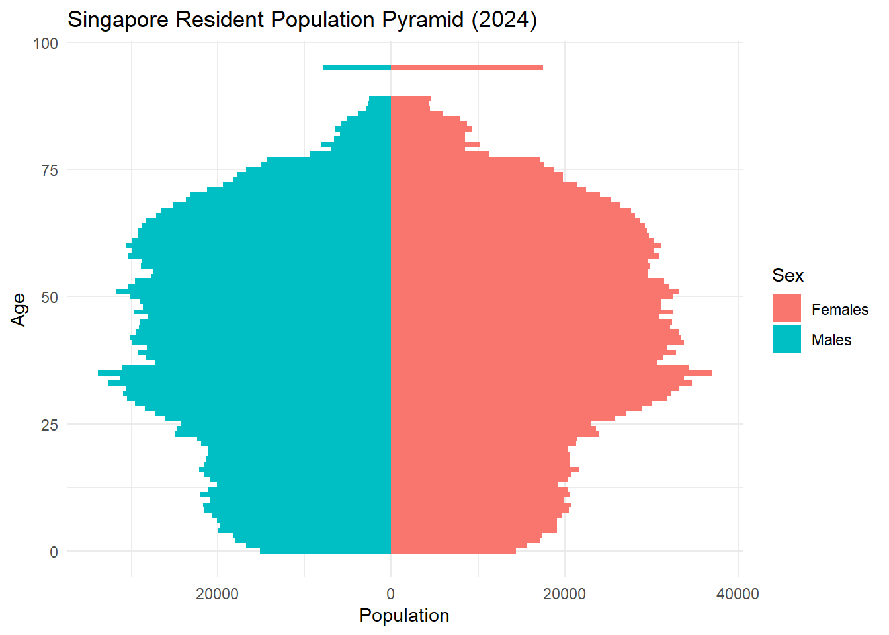
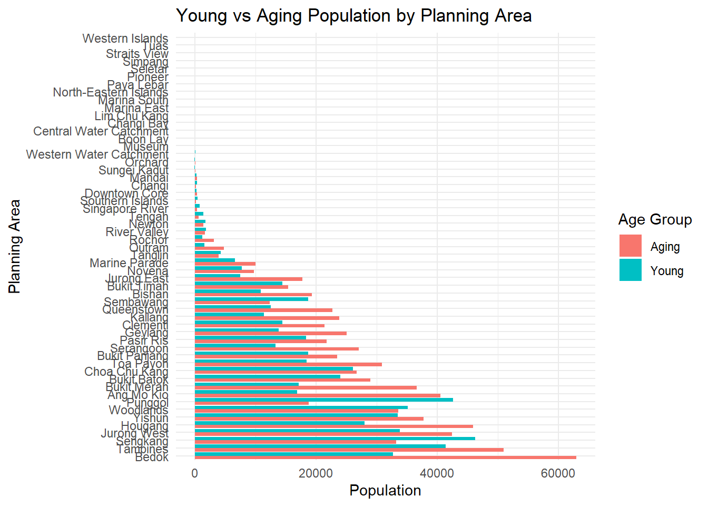
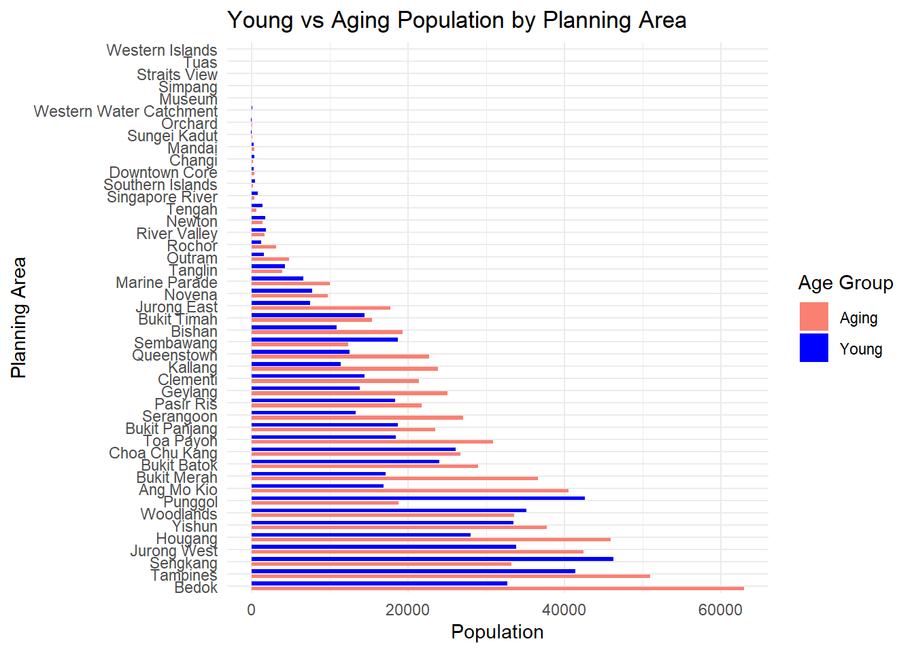
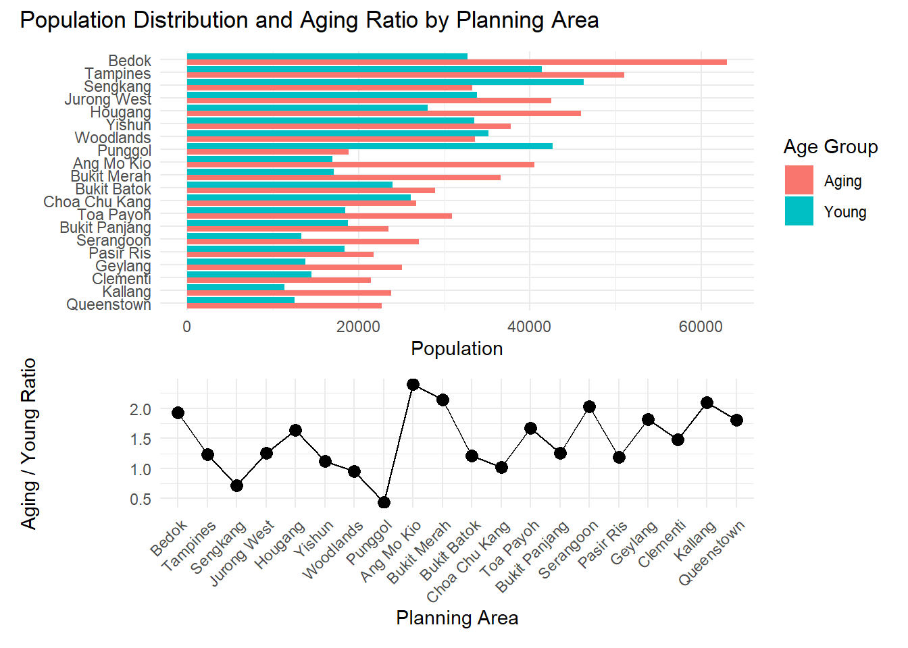
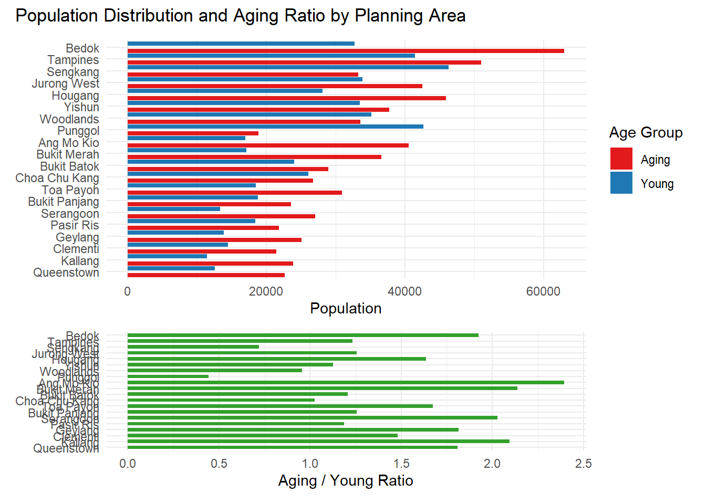
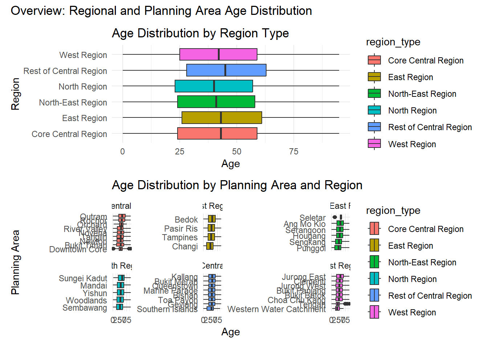

echo = FALSE
pacman::p_load(
tidyverse, haven, knitr,
patchwork, ggthemes, scales,
ggridges, ggpubr, gganimate,
ggdist, ggtext, ggalt,
cowplot, ggnewscale,
sf, viridis
)Take-home Exercise 1 - Data Visualizations in Singapore Residence by Planning Area
1. Environment Set-up
1.1 Background Information and Data Source
The data set is downloaded from “https://www.singstat.gov.sg/”
File Name: “Singapore Residents by Planning Area / Subzone, Single Year of Age and Sex, June 2024”
1.2 Data Processing
Importing Data and Install Packages
Loading and Installing Packages
1.3Read the file and Clean BOM
raw_lines <- readLines("respopagesex2024/respopagesex2024.csv", encoding = "UTF-8")
writeLines(raw_lines, "respopagesex2024/respopagesex2024_clean.csv", useBytes = TRUE)1.4 Read the Clean File
echo = FALSE
df <- read_csv("respopagesex2024/respopagesex2024_clean.csv", skip_empty_rows = TRUE)Rows: 60424 Columns: 6
── Column specification ────────────────────────────────────────────────────────
Delimiter: ","
chr (4): PA, SZ, Age, Sex
dbl (2): Pop, Time
ℹ Use `spec()` to retrieve the full column specification for this data.
ℹ Specify the column types or set `show_col_types = FALSE` to quiet this message.df <- df %>%
mutate(
Age = suppressWarnings(as.numeric(Age)),
Pop = suppressWarnings(as.numeric(Pop))
)
df_clean <- df %>%
filter(!is.na(Pop) & !is.na(Age))
show_col_types = FALSE2. Population Distributions by Planning Area
A local online media company that publishes daily content on digital platforms is planning to release an article on demographic structures and distribution of Singapore in 2024.
df <- tibble(
PA = c("Planning Area"),
SZ = c("Subzone"),
Age = c("Age"),
Sex = c("Sex"),
Pop = c("Population"),
Time = c("Time")
)
df %>%
knitr::kable(caption = "Column Information") %>%
kableExtra::kable_styling(
bootstrap_options = c("striped", "hover", "bordered"),
full_width = FALSE
)| PA | SZ | Age | Sex | Pop | Time |
|---|---|---|---|---|---|
| Planning Area | Subzone | Age | Sex | Population | Time |
2.1 Task Objective
Assuming the role of the graphical editor of the media company, you are tasked to prepare at most three data visualizations for the article.
2.2 Data Preparation
df_summary <- df_clean %>%
group_by(PA) %>%
summarise(
Total_Pop = sum(Pop, na.rm = TRUE),
.groups = "drop"
) %>%
arrange(desc(Total_Pop))2.3 Plot the Graph
The code below plots the distributions of population.
X: Planning area
Y: Total population by area in 2024
bottom10_pa <- df_summary %>%
slice_min(Total_Pop, n = 10) %>%
pull(PA)
df_summary_filtered <- df_summary %>%
filter(!PA %in% bottom10_pa)
ggplot(df_summary_filtered, aes(x = reorder(PA, -Total_Pop), y = Total_Pop)) +
geom_bar(stat = "identity", color = "black", fill = "lightblue", width = 0.75) +
scale_y_continuous(labels = scales::comma, expand = c(0, 0)) +
labs(
x = "Planning Area",
y = "Total Population",
title = "Total Population by Planning Area (2024)"
) +
theme_classic(base_size = 26) +
theme(axis.text.x = element_text(angle = 45, hjust = 1))
2.4 Analysis
The bar chart above suggests that Tampines are the most populated area according to the survey. This outcome also indicates that the outskirt area such as Tampines, Bedok, Jurong West and Woodlands are among the most populated residential area. This could be attributed to the higher rent in the central area, convenient public transportation nationwide or greener environment.
As a media company, the marketing department is able to allocate more resources on advertisement on the area which has higher population density. By analyzing population of each planning area and the resources invested in that area, companies are able to evaluate the KPI of the advertisement to further adjust the strategies.
##3.The Generation Strucutre Ratio by Planning Area
library(tidyverse)
df <- read_csv("respopagesex2024/respopagesex2024_clean.csv",
skip_empty_rows = TRUE,
show_col_types = FALSE) %>%
rename(Age_raw = Age) %>%
mutate(
Age = suppressWarnings(as.numeric(Age_raw)),
Pop = suppressWarnings(as.numeric(Pop))
)
df_clean <- df %>%
filter(!is.na(Pop))3.1 Grouping
df <- tibble(
Children = c("0-14"),
Adults = c("15-64"),
Seniors = c("Above 65"),
)
df %>%
knitr::kable(caption = "Column Information") %>%
kableExtra::kable_styling(
bootstrap_options = c("striped", "hover", "bordered"),
full_width = FALSE
)| Children | Adults | Seniors |
|---|---|---|
| 0-14 | 15-64 | Above 65 |
3.2 Data Processing and Cleaning
df_clean <- df_clean %>%
mutate(AgeGroup = case_when(
Age_raw == "90_and_Over" ~ "Seniors",
Age >= 0 & Age <= 14 ~ "Children",
Age >= 15 & Age <= 64 ~ "Adults",
Age >= 65 ~ "Seniors",
TRUE ~ NA_character_
)) %>%
filter(!is.na(AgeGroup))
df_percent <- df_clean %>%
group_by(PA, AgeGroup) %>%
summarise(Pop = sum(Pop, na.rm = TRUE), .groups = "drop") %>%
group_by(PA) %>%
mutate(
Total_Pop = sum(Pop),
Percent = Pop / Total_Pop * 100
) %>%
filter(Percent > 0) 3.3 Plotting the Graph
ggplot(df_percent, aes(
x = reorder(PA, -Total_Pop),
y = Percent,
fill = AgeGroup
)) +
geom_bar(stat = "identity",
position = "stack",
width = 0.5,
color = "black") +
scale_y_continuous(labels = scales::percent_format(scale = 1)) +
scale_fill_manual(
values = c("Children" = "lightblue", "Adults" = "lightgray", "Seniors" = "navy")
) +
labs(
title = "Age Structure by Planning Area",
x = "Planning Area",
y = "Ratio",
fill = "Age Group"
) +
theme_minimal(base_size = 20) +
theme(axis.text.x = element_text(angle = 45, hjust = 1))
3.4 Analysis
By analyzing the population structures of a specific area, media companies are able to advertise the products or the service according to the age distributions. By targeting the majority generation of a specific area, tha advertisements are more likely to reach it’s target customer, further improving the KPI of the expenses.If done properly, the advertisement could enhance the sales of a products significantly.
4. Part 2 - Graph Evaluation
4.1 Environment Setup
data <- read_csv("respopagesex2024/respopagesex2024.csv") %>%
mutate(Age = ifelse(Age == "90_and_Over", "95", Age),
Age = as.numeric(Age)) %>%
drop_na(Age)Rows: 60424 Columns: 6
── Column specification ────────────────────────────────────────────────────────
Delimiter: ","
chr (4): PA, SZ, Age, Sex
dbl (2): Pop, Time
ℹ Use `spec()` to retrieve the full column specification for this data.
ℹ Specify the column types or set `show_col_types = FALSE` to quiet this message.4.2 Figure 1
4.2.1 Plot the Graph
pyramid_data <- data %>%
group_by(Age, Sex) %>%
summarise(Pop = sum(Pop), .groups = "drop") %>%
mutate(Pop = if_else(Sex == "Males", -Pop, Pop))
pyramid_plot <- ggplot(pyramid_data, aes(x = Age, y = Pop, fill = Sex)) +
geom_bar(stat = "identity", width = 1) +
coord_flip() +
scale_y_continuous(labels = abs) +
labs(title = "Singapore Resident Population Pyramid (2024)",
x = "Age", y = "Population") +
theme_minimal()
pyramid_plot
4.2.2 Comment :
The width of the bars are too thin to distinguish the counterside of the other gender. If the number of the bars can be reduced, the graph will be more clear and easier to compare between genders.
4.2.3 Improvement:
library(tidyverse)
data_binned <- data %>%
mutate(
age_group = cut(
Age,
breaks = seq(0, 100, by = 5),
right = FALSE,
labels = paste0(seq(0, 95, by = 5), "-", seq(4, 99, by = 5))
),
age_group = factor(age_group, levels = paste0(seq(0, 95, by = 5), "-", seq(4, 99, by = 5)))
)
pyramid_data <- data_binned %>%
group_by(age_group, Sex) %>%
summarise(Pop = sum(Pop), .groups = "drop") %>%
mutate(Pop = if_else(Sex == "Males", -Pop, Pop))
ggplot(pyramid_data, aes(x = age_group, y = Pop, fill = Sex)) +
geom_col(width = 0.8) +
coord_flip() +
scale_y_continuous(labels = abs) +
labs(
title = "Singapore Resident Population Pyramid (2024)",
x = "Age Group",
y = "Population"
) +
theme_minimal() +
theme(
axis.text.y = element_text(size = 8),
axis.text.x = element_text(size = 8)
)
4.3 Figure 2
4.3.1 Plot the Graph
age_groups <- data %>%
filter(Age <= 14 | Age >= 65) %>%
mutate(group = case_when(
Age <= 14 ~ "Young",
Age >= 65 ~ "Aging"
)) %>%
group_by(PA, group) %>%
summarise(total_pop = sum(Pop), .groups = "drop")
ggplot(age_groups, aes(x = reorder(PA, -total_pop), y = total_pop, fill = group)) +
geom_col(position = "dodge") +
coord_flip() +
labs(title = "Young vs Aging Population by Planning Area",
x = "Planning Area", y = "Population", fill = "Age Group") +
theme_minimal()
4.3.3 Improvement:
library(dplyr)
library(ggplot2)
bottom10_PAs <- age_groups %>%
group_by(PA) %>%
summarise(total_pa = sum(total_pop, na.rm = TRUE)) %>%
arrange(total_pa) %>%
slice_head(n = 10) %>%
pull(PA)
age_groups_filtered <- age_groups %>%
filter(!PA %in% bottom10_PAs)
ggplot(age_groups_filtered, aes(x = reorder(PA, -total_pop), y = total_pop, fill = group)) +
geom_col(position = position_dodge(width = 0.8), width = 0.6) +
scale_fill_manual(values = c(Young = "blue", Aging = "salmon")) +
coord_flip() +
labs(
title = "Young vs Aging Population by Planning Area",
x = "Planning Area",
y = "Population",
fill = "Age Group"
) +
theme_minimal()
4.4 Data Visualization 3
4.4.1 Plot the Figure
top_pa <- age_groups %>%
group_by(PA) %>%
summarise(total = sum(total_pop)) %>%
arrange(desc(total)) %>%
slice_head(n = 20) # select top 20
top_age_groups <- age_groups %>%
filter(PA %in% top_pa$PA)
# Define the order (e.g. by total population descending)
pa_order <- top_age_groups %>%
group_by(PA) %>%
summarise(total = sum(total_pop)) %>%
arrange(desc(total)) %>%
pull(PA)
# Apply the same factor levels
top_age_groups <- top_age_groups %>%
mutate(PA = factor(PA, levels = pa_order))
ratio_data <- age_groups %>%
filter(PA %in% top_pa$PA) %>%
pivot_wider(names_from = group, values_from = total_pop) %>%
mutate(ratio = Aging / Young) %>%
filter(!is.na(PA)) %>% # Remove NAs
mutate(PA = factor(PA, levels = pa_order))
# Top bar chart
bar_plot <- ggplot(top_age_groups, aes(x = total_pop, y = fct_rev(PA), fill = group)) +
geom_col(position = "dodge") +
labs(x = "Population", y = NULL, fill = "Age Group") +
theme_minimal()
# Bottom line chart with consistent PA order
line_plot <- ggplot(ratio_data, aes(x = PA, y = ratio)) +
geom_point(size = 3, color = "black") +
geom_line(aes(group = 1), color = "black") +
labs(x = "Planning Area", y = "Aging / Young Ratio") +
theme_minimal() +
theme(axis.text.x = element_text(angle = 45, hjust = 1))
# Combine them
(bar_plot / line_plot) + plot_layout(heights = c(2, 1)) +
plot_annotation(title = "Population Distribution and Aging Ratio by Planning Area")
4.4.2 Comment:
The bar chart is pretty clear and have no redundant categories. Besides, the design clearly show the total population by descending orders, illustrating the popularity of the area. But the color and the range between different areas still can be wider to be more easy to read. Also, The usage of the line chart is not very proper since the ratio is not illustrating the trend over a period of time.
4.4.3 Improvement:
library(tidyverse)
library(patchwork)
top_pa <- age_groups %>%
group_by(PA) %>%
summarise(total = sum(total_pop)) %>%
arrange(desc(total)) %>%
slice_head(n = 20)
top_age_groups <- age_groups %>%
filter(PA %in% top_pa$PA)
pa_order <- top_age_groups %>%
group_by(PA) %>%
summarise(total = sum(total_pop)) %>%
arrange(desc(total)) %>%
pull(PA)
top_age_groups <- top_age_groups %>%
mutate(PA = factor(PA, levels = pa_order))
ratio_data <- age_groups %>%
filter(PA %in% top_pa$PA) %>%
pivot_wider(names_from = group, values_from = total_pop) %>%
mutate(ratio = Aging / Young) %>%
filter(!is.na(PA)) %>%
mutate(PA = factor(PA, levels = pa_order))
bar_plot <- ggplot(top_age_groups, aes(x = total_pop, y = fct_rev(PA), fill = group)) +
geom_col(
position = position_dodge(width = 1.2),
width = 0.7
) +
scale_fill_manual(
values = c(
Young = "#1f78b4",
Aging = "#e31a1c"
)
) +
labs(x = "Population", y = NULL, fill = "Age Group") +
theme_minimal()
ratio_plot <- ggplot(ratio_data, aes(x = ratio, y = fct_rev(PA))) +
geom_col(
fill = "#33a02c",
position = position_dodge(width = 1.5),
width = 0.6
) +
labs(x = "Aging / Young Ratio", y = NULL) +
theme_minimal()
(bar_plot / ratio_plot) +
plot_layout(heights = c(2, 1)) +
plot_annotation(title = "Population Distribution and Aging Ratio by Planning Area")
4.5 Data Visualization 4
4.5.1 Plot the Graph
expanded_data <- data %>%
filter(!is.na(PA)) %>%
mutate(Age = ifelse(Age == "90_and_Over", "95", Age),
Age = as.numeric(Age)) %>%
filter(!is.na(Age)) %>%
mutate(PA = str_trim(PA)) %>%
mutate(region_type = case_when(
# Core Central Region
PA %in% c("Downtown Core", "Outram", "Sentosa", "Rochor", "Orchard", "Newton",
"River Valley", "Bukit Timah", "Holland Road", "Tanglin", "Novena", "Thomson") ~ "Core Central Region",
# Rest of Central Region
PA %in% c("Bishan", "Bukit Merah", "Geylang", "Kallang", "Marine Parade", "Queenstown", "Southern Islands", "Toa Payoh") ~ "Rest of Central Region",
# North Region
PA %in% c("Central Water Catchment", "Lim Chu Kang", "Mandai", "Sembawang", "Simpang", "Sungei Kadut", "Woodlands", "Yishun") ~ "North Region",
# North-East Region
PA %in% c("Ang Mo Kio", "Hougang", "North-Eastern Islands", "Punggol", "Seletar",
"Sengkang", "Serangoon") ~ "North-East Region",
# East Region
PA %in% c("Bedok", "Changi", "Changi Bay", "Paya Lebar", "Pasir Ris", "Tampines") ~ "East Region",
# West Region
PA %in% c("Bukit Batok", "Bukit Panjang", "Boon Lay", "Pioneer", "Choa Chu Kang", "Clementi", "Jurong East", "Jurong West", "Tengah", "Tuas", "Western Islands", "Western Water Catchment") ~ "West Region",
TRUE ~ NA_character_
)) %>%
filter(!is.na(region_type)) %>%
uncount(weights = Pop)
p1 <- ggplot(expanded_data, aes(x = region_type, y = Age, fill = region_type)) +
geom_boxplot() +
labs(title = "Age Distribution by Region Type", x = "Region", y = "Age") +
theme_minimal() +
coord_flip()
p2 <- ggplot(expanded_data, aes(x = Age, y = fct_reorder(PA, Age), fill = region_type)) +
geom_boxplot() +
facet_wrap(~ region_type, scales = "free_y") +
labs(
title = "Age Distribution by Planning Area and Region",
x = "Age",
y = "Planning Area"
) +
theme_minimal()
p1 / p2 +
plot_annotation(title = "Overview: Regional and Planning Area Age Distribution")
4.5.2 Comment:
The combination of the box plot clearly illustrates the sge strucutre of each region. The color of each box plot are akso pretty contrast to better tell the difference among regions. However, the font zise of the graph are too small to read since the size of the box plot is so much greater than the font.
expanded_data <- data %>%
filter(!is.na(PA)) %>%
mutate(Age = ifelse(Age == "90_and_Over", "95", Age),
Age = as.numeric(Age)) %>%
filter(!is.na(Age)) %>%
mutate(PA = str_trim(PA)) %>%
mutate(region_type = case_when(
# Core Central Region
PA %in% c("Downtown Core", "Outram", "Sentosa", "Rochor", "Orchard", "Newton",
"River Valley", "Bukit Timah", "Holland Road", "Tanglin", "Novena", "Thomson") ~ "Core Central Region",
# Rest of Central Region
PA %in% c("Bishan", "Bukit Merah", "Geylang", "Kallang", "Marine Parade", "Queenstown", "Southern Islands", "Toa Payoh") ~ "Rest of Central Region",
# North Region
PA %in% c("Central Water Catchment", "Lim Chu Kang", "Mandai", "Sembawang", "Simpang", "Sungei Kadut", "Woodlands", "Yishun") ~ "North Region",
# North-East Region
PA %in% c("Ang Mo Kio", "Hougang", "North-Eastern Islands", "Punggol", "Seletar",
"Sengkang", "Serangoon") ~ "North-East Region",
# East Region
PA %in% c("Bedok", "Changi", "Changi Bay", "Paya Lebar", "Pasir Ris", "Tampines") ~ "East Region",
# West Region
PA %in% c("Bukit Batok", "Bukit Panjang", "Boon Lay", "Pioneer", "Choa Chu Kang", "Clementi", "Jurong East", "Jurong West", "Tengah", "Tuas", "Western Islands", "Western Water Catchment") ~ "West Region",
TRUE ~ NA_character_
)) %>%
filter(!is.na(region_type)) %>%
uncount(weights = Pop)
p1 <- ggplot(expanded_data, aes(x = region_type, y = Age, fill = region_type)) +
geom_boxplot() +
labs(title = "Age Distribution by Region Type", x = "Region", y = "Age") +
theme_minimal() +
coord_flip()
p2 <- ggplot(expanded_data, aes(x = Age, y = fct_reorder(PA, Age), fill = region_type)) +
geom_boxplot() +
facet_wrap(~ region_type, scales = "free_y") +
labs(
title = "Age Distribution by Planning Area and Region",
x = "Age",
y = "Planning Area"
) +
theme_minimal()
p1 / p2 +
plot_annotation(title = "Overview: Regional and Planning Area Age Distribution")
4.3.2 Comment:
First of all, there are lots of data have no values in the graph. It will make the graoh overall more inormation-focused my removing the empty part. Secondly, the color of two age groups should be more contrast and the space between genders should be wider as we can see it is difficult distinguish the age group.